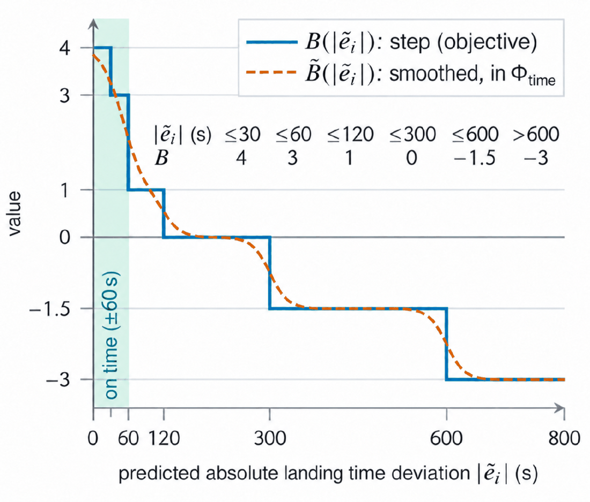

Objective and reward
Summary
The reward states the objective directly, in order of priority: no loss of separation, each
flight in the best achievable landing-time bracket, and as few clearances as possible. A flight
earns a bracket value between 4 (within 30 s of its AMAN target landing time) and −3 (more than
600 s off). Every clearance other than do nothing costs 0.006. A realised loss of separation
costs 100 and ends the episode. The sizes are chosen so that a lower priority can never pay for
a higher one. A fourth term, potential-based shaping computed from the no-operation rollout,
gives a learning signal at every step without changing which policy is optimal. A zero-time
reselection transition is discounted by 1, an ordinary 45 s transition by γ = 0.998.
Source: single-agent/atc_env/windowed_env.py (reward mode outcome_pbrs: landing_value,
landing_value_smooth, _potential, step, _queue_pick), single-agent/config/windowed_config.py
and single-agent/config/config.py (constants), single-agent/actions/rewards.py
(infringement_reward_from_world), single-agent/jax_ppo/ppo.py (per-transition discount).
The step reward
Term
Purpose
Value
Landing-time performance
score each flight once, by the bracket of its realised time deviation
B from +4 to −3
Action efficiency
reach a timing outcome with fewer interventions
−0.006 per real clearance
Safety
make an unsafe outcome worse than any timing outcome
−100, terminal
Intermediate learning signal
reward a change in the predicted outcome
F, sums to a constant along an episode
e_i is the time deviation of flight i: the difference between its AMAN target landing time
and its actual landing time. Only its absolute value enters the reward.
Landing bracket
Absolute time deviation
≤ 30 s
≤ 60 s
≤ 120 s
≤ 300 s
≤ 600 s
> 600 s
B4
3
1
0
−1.5
−3
B is a step function (landing_value): where a flight lands inside a bracket does not change
its score. The score measures the realised outcome and each flight earns it exactly once.

The bracket value B (step function, the objective) and its smoothed version B̃ used
inside the shaping potential, against the absolute landing-time deviation. The shaded band marks
landings within 60 s of the target.
Payment at release. In the published configuration a flight at the head of the queue is
released from the window once it is under control and the forecast shows it landing within 30 s of
its target, clear of any predicted separation event
(Episodes and windowing ). Its bracket value is
paid at that moment, from the predicted deviation, and the flight leaves the time potential
below. Release requires a predicted deviation within 30 s, so the amount paid is the top value, 4.
At touchdown only the difference between the realised bracket and the amount already paid is
added, so every flight still earns exactly B of its realised deviation. If the episode ends in
a loss of separation before a released flight has landed, its payment is taken back.
Action cost
Every clearance other than do nothing costs β = 0.006 (WindowedConfig.CLEARANCE_COST). The
cost is a count: it does not depend on the type of clearance or on when it is issued. A clearance
queued by reselection is charged when it is queued.
Loss-of-separation penalty
A realised loss of separation, two aircraft closer than 3 NM and 500 ft in the live world
(Separation rules ), ends the episode with a penalty of 100. An aircraft leaving
the airspace is treated in the same way. The value follows from the bracket ladder:
that is, a base of 30 (Config.REWARD_VIOLATION_PENALTY) plus the difference between the best
and the worst bracket for all ten flights of the window. The penalty is a constant: it does not
depend on how many flights or steps remain in the stream, which the policy cannot observe.
Why the order is strict
reward magnitudes · logarithmic scale
0.001
0.01
0.1
1
10
100
action cost: one real clearance, 0.006
one clearance at each of 160 steps: 0.96
smallest step between two brackets: 1
one flight, best to worst: 7
a loss of separation: 100 = 30 + a whole window of 10 flights × 7 (70)
Clearances cannot buy a worse bracket. The action cost is sized for one clearance per 45 s
interval over a 20-flight stream of about 160 intervals: 160 × 0.006 = 0.96, less than the
smallest step between two brackets (1). Between two outcomes with the same brackets, the one
with fewer clearances always scores higher. With reselection up to two clearances can be issued
per interval, so this bound is not guaranteed by construction; it holds for any episode with
fewer than 167 clearances.Brackets cannot buy a loss of separation. The penalty of 100 exceeds the largest aggregate
improvement in bracket value available to the ten flights of the visible window (10 × 7 = 70).
Shaping
The bracket values arrive only when flights land, and the penalty only when it is too late. The
shaping term provides the intermediate signal:
Φ is a potential computed from the predicted world, the same no-operation rollout that the
observation is built from. Φ(s) therefore measures the quality of the
forecast if nothing more is done, and F rewards an action when it improves that forecast and
penalises it when the forecast worsens. For example, slowing a flight that was heading for a 150 s
miss so that it is now predicted on time pays the difference between the two forecasts at once.
Because F has the potential-based form, its discounted sum along an episode depends only on the
first and last state, not on the actions in between, so it cannot change which policy is optimal
(Ng, Harada and Russell, 1999). After a loss of separation Φ(s') is 0.
The potential has four components:
Component
Definition
Constants
Φ_time, predicted landing accuracy+ Σ w_i · B̃(d_i) over the flights not yet landed whose landing the forecast resolves; d_i is the absolute predicted time deviationsmoothing width 15 s
Φ_sep, separation− 10 · Σ q_ij · max(0.005, 2^(−TTI_ij / 240 s)) over the aircraft pairs with a predicted infringement and at least one aircraft in the windowweight 10, half-life 240 s, floor 0.005
Φ_seq, AMAN order− Σ w over the pairs of flights, neither yet landed, that are predicted to land in the reverse of their AMAN order; w is taken at the earlier predicted landing1 per inversion
Φ_gap, landing gap− Σ w_j · max(0, 90 s − gap_ij) / 60 s over consecutive flights (i, j) of the AMAN sequence with j not yet landed; gap_ij = max(0, t̃_j − t̃_i)90 s minimum gap, 1 per minute
t̃_i is the predicted landing time of flight i and t the current time. For a flight that
has already landed the actual landing time is used.
Proximity weight
The weight rises linearly from 0, for a landing predicted 2880 s or more ahead, to 1 at touchdown
(WindowedConfig.DEVIATION_RAMP_S). A predicted reversal or a compressed gap counts more the
closer it is to happening.
In Φ_time the published policies use w_i = 1 for every flight whose landing the forecast
resolves (setting pbrs_flat_deviation), so a correction made early is credited as soon as it
changes the forecast. Without that setting Φ_time uses the proximity weight as well. A flight
whose bracket has been paid at release is no longer part of Φ_time.
Smoothed bracket
Inside Φ_time each step of B is replaced by a sigmoid of width 15 s
(landing_value_smooth, WindowedConfig.LANDING_SMOOTH_KAPPA_S), so that the potential still
changes when a predicted deviation moves within a bracket:
with d in seconds. B̃ is the dashed curve in the figure above. It appears only in the
potential; the objective itself uses the step function.
Separation potential
For each aircraft pair, the earliest predicted infringement at time τ_ij defines the
time to infringement TTI_ij = τ_ij − t and the severity
from the horizontal and vertical separation at that time. The severity is 0 at or beyond the
infringement boundary (5 NM, 1000 ft) and 1 at the conflict boundary (3 NM, 500 ft); see
Separation rules . The factor 2^(−TTI/240 s) halves the weight of a
predicted infringement for every four minutes of warning, with a floor of 0.005
(Config.CONFLICT_HALF_LIFE_S, Config.CONFLICT_FAR_FLOOR).
The contribution of one aircraft pair at the same altitude, by how close the pair is predicted to
come and how soon. A conflict predicted two minutes ahead contributes about −7 and an imminent one
−10, more than the whole bracket range of one flight (7). Resolving it returns that amount at
once:
time to the predicted conflict (s) 0, predicted horizontal separation at closest approach (NM), same altitude 0–3: -10 time to the predicted conflict (s) 0, predicted horizontal separation at closest approach (NM), same altitude 3.1: -9.03 time to the predicted conflict (s) 0, predicted horizontal separation at closest approach (NM), same altitude 3.2: -8.1 time to the predicted conflict (s) 0, predicted horizontal separation at closest approach (NM), same altitude 3.3: -7.22 time to the predicted conflict (s) 0, predicted horizontal separation at closest approach (NM), same altitude 3.4: -6.4 time to the predicted conflict (s) 0, predicted horizontal separation at closest approach (NM), same altitude 3.5: -5.62 time to the predicted conflict (s) 0, predicted horizontal separation at closest approach (NM), same altitude 3.6: -4.9 time to the predicted conflict (s) 0, predicted horizontal separation at closest approach (NM), same altitude 3.7: -4.22 time to the predicted conflict (s) 0, predicted horizontal separation at closest approach (NM), same altitude 3.8: -3.6 time to the predicted conflict (s) 0, predicted horizontal separation at closest approach (NM), same altitude 3.9: -3.02 time to the predicted conflict (s) 0, predicted horizontal separation at closest approach (NM), same altitude 4: -2.5 time to the predicted conflict (s) 0, predicted horizontal separation at closest approach (NM), same altitude 4.1–4.2: -2.02 to -1.6 time to the predicted conflict (s) 0, predicted horizontal separation at closest approach (NM), same altitude 4.3: -1.23 time to the predicted conflict (s) 0, predicted horizontal separation at closest approach (NM), same altitude 4.4–4.9: -0.9 to -0.025 time to the predicted conflict (s) 30, predicted horizontal separation at closest approach (NM), same altitude 0–3: -9.17 time to the predicted conflict (s) 30, predicted horizontal separation at closest approach (NM), same altitude 3.1: -8.28 time to the predicted conflict (s) 30, predicted horizontal separation at closest approach (NM), same altitude 3.2: -7.43 time to the predicted conflict (s) 30, predicted horizontal separation at closest approach (NM), same altitude 3.3: -6.63 time to the predicted conflict (s) 30, predicted horizontal separation at closest approach (NM), same altitude 3.4: -5.87 time to the predicted conflict (s) 30, predicted horizontal separation at closest approach (NM), same altitude 3.5: -5.16 time to the predicted conflict (s) 30, predicted horizontal separation at closest approach (NM), same altitude 3.6: -4.49 time to the predicted conflict (s) 30, predicted horizontal separation at closest approach (NM), same altitude 3.7: -3.87 time to the predicted conflict (s) 30, predicted horizontal separation at closest approach (NM), same altitude 3.8: -3.3 time to the predicted conflict (s) 30, predicted horizontal separation at closest approach (NM), same altitude 3.9–4: -2.77 to -2.29 time to the predicted conflict (s) 30, predicted horizontal separation at closest approach (NM), same altitude 4.1: -1.86 time to the predicted conflict (s) 30, predicted horizontal separation at closest approach (NM), same altitude 4.2–4.3: -1.47 to -1.12 time to the predicted conflict (s) 30, predicted horizontal separation at closest approach (NM), same altitude 4.4–4.9: -0.825 to -0.0229 time to the predicted conflict (s) 60, predicted horizontal separation at closest approach (NM), same altitude 0–3: -8.41 time to the predicted conflict (s) 60, predicted horizontal separation at closest approach (NM), same altitude 3.1: -7.59 time to the predicted conflict (s) 60, predicted horizontal separation at closest approach (NM), same altitude 3.2: -6.81 time to the predicted conflict (s) 60, predicted horizontal separation at closest approach (NM), same altitude 3.3: -6.08 time to the predicted conflict (s) 60, predicted horizontal separation at closest approach (NM), same altitude 3.4: -5.38 time to the predicted conflict (s) 60, predicted horizontal separation at closest approach (NM), same altitude 3.5: -4.73 time to the predicted conflict (s) 60, predicted horizontal separation at closest approach (NM), same altitude 3.6: -4.12 time to the predicted conflict (s) 60, predicted horizontal separation at closest approach (NM), same altitude 3.7: -3.55 time to the predicted conflict (s) 60, predicted horizontal separation at closest approach (NM), same altitude 3.8: -3.03 time to the predicted conflict (s) 60, predicted horizontal separation at closest approach (NM), same altitude 3.9: -2.54 time to the predicted conflict (s) 60, predicted horizontal separation at closest approach (NM), same altitude 4–4.1: -2.1 to -1.7 time to the predicted conflict (s) 60, predicted horizontal separation at closest approach (NM), same altitude 4.2–4.3: -1.35 to -1.03 time to the predicted conflict (s) 60, predicted horizontal separation at closest approach (NM), same altitude 4.4–4.9: -0.757 to -0.021 time to the predicted conflict (s) 90, predicted horizontal separation at closest approach (NM), same altitude 0–3: -7.71 time to the predicted conflict (s) 90, predicted horizontal separation at closest approach (NM), same altitude 3.1: -6.96 time to the predicted conflict (s) 90, predicted horizontal separation at closest approach (NM), same altitude 3.2: -6.25 time to the predicted conflict (s) 90, predicted horizontal separation at closest approach (NM), same altitude 3.3: -5.57 time to the predicted conflict (s) 90, predicted horizontal separation at closest approach (NM), same altitude 3.4: -4.94 time to the predicted conflict (s) 90, predicted horizontal separation at closest approach (NM), same altitude 3.5: -4.34 time to the predicted conflict (s) 90, predicted horizontal separation at closest approach (NM), same altitude 3.6: -3.78 time to the predicted conflict (s) 90, predicted horizontal separation at closest approach (NM), same altitude 3.7: -3.26 time to the predicted conflict (s) 90, predicted horizontal separation at closest approach (NM), same altitude 3.8–3.9: -2.78 to -2.33 time to the predicted conflict (s) 90, predicted horizontal separation at closest approach (NM), same altitude 4: -1.93 time to the predicted conflict (s) 90, predicted horizontal separation at closest approach (NM), same altitude 4.1–4.3: -1.56 to -0.945 time to the predicted conflict (s) 90, predicted horizontal separation at closest approach (NM), same altitude 4.4–4.9: -0.694 to -0.0193 time to the predicted conflict (s) 120, predicted horizontal separation at closest approach (NM), same altitude 0–3: -7.07 time to the predicted conflict (s) 120, predicted horizontal separation at closest approach (NM), same altitude 3.1: -6.38 time to the predicted conflict (s) 120, predicted horizontal separation at closest approach (NM), same altitude 3.2: -5.73 time to the predicted conflict (s) 120, predicted horizontal separation at closest approach (NM), same altitude 3.3: -5.11 time to the predicted conflict (s) 120, predicted horizontal separation at closest approach (NM), same altitude 3.4: -4.53 time to the predicted conflict (s) 120, predicted horizontal separation at closest approach (NM), same altitude 3.5–3.6: -3.98 to -3.46 time to the predicted conflict (s) 120, predicted horizontal separation at closest approach (NM), same altitude 3.7: -2.99 time to the predicted conflict (s) 120, predicted horizontal separation at closest approach (NM), same altitude 3.8: -2.55 time to the predicted conflict (s) 120, predicted horizontal separation at closest approach (NM), same altitude 3.9–4: -2.14 to -1.77 time to the predicted conflict (s) 120, predicted horizontal separation at closest approach (NM), same altitude 4.1–4.2: -1.43 to -1.13 time to the predicted conflict (s) 120, predicted horizontal separation at closest approach (NM), same altitude 4.3–4.9: -0.866 to -0.0177 time to the predicted conflict (s) 150, predicted horizontal separation at closest approach (NM), same altitude 0–3: -6.48 time to the predicted conflict (s) 150, predicted horizontal separation at closest approach (NM), same altitude 3.1: -5.85 time to the predicted conflict (s) 150, predicted horizontal separation at closest approach (NM), same altitude 3.2: -5.25 time to the predicted conflict (s) 150, predicted horizontal separation at closest approach (NM), same altitude 3.3–3.4: -4.68 to -4.15 time to the predicted conflict (s) 150, predicted horizontal separation at closest approach (NM), same altitude 3.5: -3.65 time to the predicted conflict (s) 150, predicted horizontal separation at closest approach (NM), same altitude 3.6: -3.18 time to the predicted conflict (s) 150, predicted horizontal separation at closest approach (NM), same altitude 3.7–3.8: -2.74 to -2.33 time to the predicted conflict (s) 150, predicted horizontal separation at closest approach (NM), same altitude 3.9–4: -1.96 to -1.62 time to the predicted conflict (s) 150, predicted horizontal separation at closest approach (NM), same altitude 4.1–4.2: -1.31 to -1.04 time to the predicted conflict (s) 150, predicted horizontal separation at closest approach (NM), same altitude 4.3–4.9: -0.794 to -0.0162 time to the predicted conflict (s) 180, predicted horizontal separation at closest approach (NM), same altitude 0–3: -5.95 time to the predicted conflict (s) 180, predicted horizontal separation at closest approach (NM), same altitude 3.1: -5.37 time to the predicted conflict (s) 180, predicted horizontal separation at closest approach (NM), same altitude 3.2: -4.82 time to the predicted conflict (s) 180, predicted horizontal separation at closest approach (NM), same altitude 3.3: -4.3 time to the predicted conflict (s) 180, predicted horizontal separation at closest approach (NM), same altitude 3.4: -3.81 time to the predicted conflict (s) 180, predicted horizontal separation at closest approach (NM), same altitude 3.5–3.6: -3.34 to -2.91 time to the predicted conflict (s) 180, predicted horizontal separation at closest approach (NM), same altitude 3.7: -2.51 time to the predicted conflict (s) 180, predicted horizontal separation at closest approach (NM), same altitude 3.8–3.9: -2.14 to -1.8 time to the predicted conflict (s) 180, predicted horizontal separation at closest approach (NM), same altitude 4–4.2: -1.49 to -0.951 time to the predicted conflict (s) 180, predicted horizontal separation at closest approach (NM), same altitude 4.3–4.9: -0.728 to -0.0149 time to the predicted conflict (s) 210, predicted horizontal separation at closest approach (NM), same altitude 0–3: -5.45 time to the predicted conflict (s) 210, predicted horizontal separation at closest approach (NM), same altitude 3.1: -4.92 time to the predicted conflict (s) 210, predicted horizontal separation at closest approach (NM), same altitude 3.2: -4.42 time to the predicted conflict (s) 210, predicted horizontal separation at closest approach (NM), same altitude 3.3–3.4: -3.94 to -3.49 time to the predicted conflict (s) 210, predicted horizontal separation at closest approach (NM), same altitude 3.5: -3.07 time to the predicted conflict (s) 210, predicted horizontal separation at closest approach (NM), same altitude 3.6–3.7: -2.67 to -2.3 time to the predicted conflict (s) 210, predicted horizontal separation at closest approach (NM), same altitude 3.8–3.9: -1.96 to -1.65 time to the predicted conflict (s) 210, predicted horizontal separation at closest approach (NM), same altitude 4–4.1: -1.36 to -1.1 time to the predicted conflict (s) 210, predicted horizontal separation at closest approach (NM), same altitude 4.2–4.9: -0.872 to -0.0136 time to the predicted conflict (s) 240, predicted horizontal separation at closest approach (NM), same altitude 0–3: -5 time to the predicted conflict (s) 240, predicted horizontal separation at closest approach (NM), same altitude 3.1: -4.51 time to the predicted conflict (s) 240, predicted horizontal separation at closest approach (NM), same altitude 3.2–3.3: -4.05 to -3.61 time to the predicted conflict (s) 240, predicted horizontal separation at closest approach (NM), same altitude 3.4: -3.2 time to the predicted conflict (s) 240, predicted horizontal separation at closest approach (NM), same altitude 3.5–3.6: -2.81 to -2.45 time to the predicted conflict (s) 240, predicted horizontal separation at closest approach (NM), same altitude 3.7–3.8: -2.11 to -1.8 time to the predicted conflict (s) 240, predicted horizontal separation at closest approach (NM), same altitude 3.9–4.1: -1.51 to -1.01 time to the predicted conflict (s) 240, predicted horizontal separation at closest approach (NM), same altitude 4.2–4.9: -0.8 to -0.0125 time to the predicted conflict (s) 270, predicted horizontal separation at closest approach (NM), same altitude 0–3.1: -4.59 to -4.14 time to the predicted conflict (s) 270, predicted horizontal separation at closest approach (NM), same altitude 3.2: -3.71 time to the predicted conflict (s) 270, predicted horizontal separation at closest approach (NM), same altitude 3.3–3.4: -3.31 to -2.93 time to the predicted conflict (s) 270, predicted horizontal separation at closest approach (NM), same altitude 3.5–3.6: -2.58 to -2.25 time to the predicted conflict (s) 270, predicted horizontal separation at closest approach (NM), same altitude 3.7–3.8: -1.94 to -1.65 time to the predicted conflict (s) 270, predicted horizontal separation at closest approach (NM), same altitude 3.9–4: -1.39 to -1.15 time to the predicted conflict (s) 270, predicted horizontal separation at closest approach (NM), same altitude 4.1–4.9: -0.928 to -0.0115 time to the predicted conflict (s) 300, predicted horizontal separation at closest approach (NM), same altitude 0–3: -4.2 time to the predicted conflict (s) 300, predicted horizontal separation at closest approach (NM), same altitude 3.1: -3.79 time to the predicted conflict (s) 300, predicted horizontal separation at closest approach (NM), same altitude 3.2–3.3: -3.41 to -3.04 time to the predicted conflict (s) 300, predicted horizontal separation at closest approach (NM), same altitude 3.4–3.5: -2.69 to -2.37 time to the predicted conflict (s) 300, predicted horizontal separation at closest approach (NM), same altitude 3.6–3.7: -2.06 to -1.78 time to the predicted conflict (s) 300, predicted horizontal separation at closest approach (NM), same altitude 3.8–4: -1.51 to -1.05 time to the predicted conflict (s) 300, predicted horizontal separation at closest approach (NM), same altitude 4.1–4.9: -0.851 to -0.0105 time to the predicted conflict (s) 330, predicted horizontal separation at closest approach (NM), same altitude 0–3.1: -3.86 to -3.48 time to the predicted conflict (s) 330, predicted horizontal separation at closest approach (NM), same altitude 3.2: -3.12 time to the predicted conflict (s) 330, predicted horizontal separation at closest approach (NM), same altitude 3.3–3.4: -2.79 to -2.47 time to the predicted conflict (s) 330, predicted horizontal separation at closest approach (NM), same altitude 3.5–3.7: -2.17 to -1.63 time to the predicted conflict (s) 330, predicted horizontal separation at closest approach (NM), same altitude 3.8–4: -1.39 to -0.964 time to the predicted conflict (s) 330, predicted horizontal separation at closest approach (NM), same altitude 4.1–4.9: -0.781 to -0.00964 time to the predicted conflict (s) 360, predicted horizontal separation at closest approach (NM), same altitude 0–3: -3.54 time to the predicted conflict (s) 360, predicted horizontal separation at closest approach (NM), same altitude 3.1–3.2: -3.19 to -2.86 time to the predicted conflict (s) 360, predicted horizontal separation at closest approach (NM), same altitude 3.3–3.4: -2.55 to -2.26 time to the predicted conflict (s) 360, predicted horizontal separation at closest approach (NM), same altitude 3.5–3.6: -1.99 to -1.73 time to the predicted conflict (s) 360, predicted horizontal separation at closest approach (NM), same altitude 3.7–3.9: -1.49 to -1.07 time to the predicted conflict (s) 360, predicted horizontal separation at closest approach (NM), same altitude 4–4.9: -0.884 to -0.00884 time to the predicted conflict (s) 390, predicted horizontal separation at closest approach (NM), same altitude 0–3.1: -3.24 to -2.93 time to the predicted conflict (s) 390, predicted horizontal separation at closest approach (NM), same altitude 3.2–3.3: -2.63 to -2.34 time to the predicted conflict (s) 390, predicted horizontal separation at closest approach (NM), same altitude 3.4–3.6: -2.07 to -1.59 time to the predicted conflict (s) 390, predicted horizontal separation at closest approach (NM), same altitude 3.7–3.9: -1.37 to -0.981 time to the predicted conflict (s) 390, predicted horizontal separation at closest approach (NM), same altitude 4–4.9: -0.811 to -0.00811 time to the predicted conflict (s) 420, predicted horizontal separation at closest approach (NM), same altitude 0–3: -2.97 time to the predicted conflict (s) 420, predicted horizontal separation at closest approach (NM), same altitude 3.1–3.2: -2.68 to -2.41 time to the predicted conflict (s) 420, predicted horizontal separation at closest approach (NM), same altitude 3.3–3.5: -2.15 to -1.67 time to the predicted conflict (s) 420, predicted horizontal separation at closest approach (NM), same altitude 3.6–3.8: -1.46 to -1.07 time to the predicted conflict (s) 420, predicted horizontal separation at closest approach (NM), same altitude 3.9–4.9: -0.899 to -0.00743 time to the predicted conflict (s) 450, predicted horizontal separation at closest approach (NM), same altitude 0–3.2: -2.73 to -2.21 time to the predicted conflict (s) 450, predicted horizontal separation at closest approach (NM), same altitude 3.3–3.4: -1.97 to -1.74 time to the predicted conflict (s) 450, predicted horizontal separation at closest approach (NM), same altitude 3.5–3.8: -1.53 to -0.981 time to the predicted conflict (s) 450, predicted horizontal separation at closest approach (NM), same altitude 3.9–4.9: -0.825 to -0.00682 time to the predicted conflict (s) 480, predicted horizontal separation at closest approach (NM), same altitude 0–3.1: -2.5 to -2.26 time to the predicted conflict (s) 480, predicted horizontal separation at closest approach (NM), same altitude 3.2–3.4: -2.02 to -1.6 time to the predicted conflict (s) 480, predicted horizontal separation at closest approach (NM), same altitude 3.5–3.7: -1.41 to -1.06 time to the predicted conflict (s) 480, predicted horizontal separation at closest approach (NM), same altitude 3.8–4.9: -0.9 to -0.00625 time to the predicted conflict (s) 510, predicted horizontal separation at closest approach (NM), same altitude 0–3: -2.29 time to the predicted conflict (s) 510, predicted horizontal separation at closest approach (NM), same altitude 3.1–3.3: -2.07 to -1.66 time to the predicted conflict (s) 510, predicted horizontal separation at closest approach (NM), same altitude 3.4–3.7: -1.47 to -0.969 time to the predicted conflict (s) 510, predicted horizontal separation at closest approach (NM), same altitude 3.8–4.9: -0.825 to -0.00573 time to the predicted conflict (s) 540, predicted horizontal separation at closest approach (NM), same altitude 0–3.2: -2.1 to -1.7 time to the predicted conflict (s) 540, predicted horizontal separation at closest approach (NM), same altitude 3.3–3.6: -1.52 to -1.03 time to the predicted conflict (s) 540, predicted horizontal separation at closest approach (NM), same altitude 3.7–4.9: -0.888 to -0.00526 time to the predicted conflict (s) 570, predicted horizontal separation at closest approach (NM), same altitude 0–3.1: -1.93 to -1.74 time to the predicted conflict (s) 570, predicted horizontal separation at closest approach (NM), same altitude 3.2–3.6: -1.56 to -0.945 time to the predicted conflict (s) 570, predicted horizontal separation at closest approach (NM), same altitude 3.7–4.9: -0.814 to -0.00482 time to the predicted conflict (s) 600, predicted horizontal separation at closest approach (NM), same altitude 0–3.1: -1.77 to -1.6 time to the predicted conflict (s) 600, predicted horizontal separation at closest approach (NM), same altitude 3.2–3.5: -1.43 to -0.994 time to the predicted conflict (s) 600, predicted horizontal separation at closest approach (NM), same altitude 3.6–4.9: -0.866 to -0.00442 time to the predicted conflict (s) 630, predicted horizontal separation at closest approach (NM), same altitude 0–3: -1.62 time to the predicted conflict (s) 630, predicted horizontal separation at closest approach (NM), same altitude 3.1–3.4: -1.46 to -1.04 time to the predicted conflict (s) 630, predicted horizontal separation at closest approach (NM), same altitude 3.5–4.9: -0.912 to -0.00405 time to the predicted conflict (s) 660, predicted horizontal separation at closest approach (NM), same altitude 0–3.4: -1.49 to -0.951 time to the predicted conflict (s) 660, predicted horizontal separation at closest approach (NM), same altitude 3.5–4.9: -0.836 to -0.00372 time to the predicted conflict (s) 690, predicted horizontal separation at closest approach (NM), same altitude 0–3.3: -1.36 to -0.985 time to the predicted conflict (s) 690, predicted horizontal separation at closest approach (NM), same altitude 3.4–4.9: -0.872 to -0.00341 time to the predicted conflict (s) 720, predicted horizontal separation at closest approach (NM), same altitude 0–3.2: -1.25 to -1.01 time to the predicted conflict (s) 720, predicted horizontal separation at closest approach (NM), same altitude 3.3–4.9: -0.903 to -0.00312 time to the predicted conflict (s) 750, predicted horizontal separation at closest approach (NM), same altitude 0–3.1: -1.15 to -1.03 time to the predicted conflict (s) 750, predicted horizontal separation at closest approach (NM), same altitude 3.2–4.9: -0.928 to -0.00287 time to the predicted conflict (s) 780, predicted horizontal separation at closest approach (NM), same altitude 0–3.1: -1.05 to -0.949 time to the predicted conflict (s) 780, predicted horizontal separation at closest approach (NM), same altitude 3.2–4.9: -0.851 to -0.00263 time to the predicted conflict (s) 810, predicted horizontal separation at closest approach (NM), same altitude 0–3: -0.964 time to the predicted conflict (s) 810, predicted horizontal separation at closest approach (NM), same altitude 3.1–4.9: -0.87 to -0.00241 time to the predicted conflict (s) 840, predicted horizontal separation at closest approach (NM), same altitude 0–4.9: -0.884 to -0.00221 time to the predicted conflict (s) 870, predicted horizontal separation at closest approach (NM), same altitude 0–4.9: -0.811 to -0.00203 time to the predicted conflict (s) 900, predicted horizontal separation at closest approach (NM), same altitude 0–4.9: -0.743 to -0.00186 time to the predicted conflict (s) 930, predicted horizontal separation at closest approach (NM), same altitude 0–4.9: -0.682 to -0.0017 time to the predicted conflict (s) 960, predicted horizontal separation at closest approach (NM), same altitude 0–4.9: -0.625 to -0.00156 time to the predicted conflict (s) 990, predicted horizontal separation at closest approach (NM), same altitude 0–4.9: -0.573 to -0.00143 time to the predicted conflict (s) 1020, predicted horizontal separation at closest approach (NM), same altitude 0–4.9: -0.526 to -0.00131 time to the predicted conflict (s) 1050, predicted horizontal separation at closest approach (NM), same altitude 0–4.9: -0.482 to -0.0012 time to the predicted conflict (s) 1080, predicted horizontal separation at closest approach (NM), same altitude 0–4.9: -0.442 to -0.0011 time to the predicted conflict (s) 1110, predicted horizontal separation at closest approach (NM), same altitude 0–4.9: -0.405 to -0.00101 time to the predicted conflict (s) 1140, predicted horizontal separation at closest approach (NM), same altitude 0–4.9: -0.372 to -0.000929 time to the predicted conflict (s) 1170, predicted horizontal separation at closest approach (NM), same altitude 0–4.9: -0.341 to -0.000852 time to the predicted conflict (s) 1200, predicted horizontal separation at closest approach (NM), same altitude 0–4.9: -0.312 to -0.000781 time to the predicted conflict (s) 1230, predicted horizontal separation at closest approach (NM), same altitude 0–4.9: -0.287 to -0.000716 time to the predicted conflict (s) 1260, predicted horizontal separation at closest approach (NM), same altitude 0–4.9: -0.263 to -0.000657 time to the predicted conflict (s) 1290, predicted horizontal separation at closest approach (NM), same altitude 0–4.9: -0.241 to -0.000602 time to the predicted conflict (s) 1320, predicted horizontal separation at closest approach (NM), same altitude 0–4.9: -0.221 to -0.000552 time to the predicted conflict (s) 1350, predicted horizontal separation at closest approach (NM), same altitude 0–4.9: -0.203 to -0.000507 time to the predicted conflict (s) 1380, predicted horizontal separation at closest approach (NM), same altitude 0–4.9: -0.186 to -0.000465 time to the predicted conflict (s) 1410, predicted horizontal separation at closest approach (NM), same altitude 0–4.9: -0.17 to -0.000426 time to the predicted conflict (s) 1440, predicted horizontal separation at closest approach (NM), same altitude 0–4.9: -0.156 to -0.000391 time to the predicted conflict (s) 1470, predicted horizontal separation at closest approach (NM), same altitude 0–4.9: -0.143 to -0.000358 time to the predicted conflict (s) 1500, predicted horizontal separation at closest approach (NM), same altitude 0–4.9: -0.131 to -0.000328 time to the predicted conflict (s) 1530, predicted horizontal separation at closest approach (NM), same altitude 0–4.9: -0.12 to -0.000301 time to the predicted conflict (s) 1560, predicted horizontal separation at closest approach (NM), same altitude 0–4.9: -0.11 to -0.000276 time to the predicted conflict (s) 1590, predicted horizontal separation at closest approach (NM), same altitude 0–4.9: -0.101 to -0.000253 time to the predicted conflict (s) 1620, predicted horizontal separation at closest approach (NM), same altitude 0–4.9: -0.0929 to -0.000232 time to the predicted conflict (s) 1650, predicted horizontal separation at closest approach (NM), same altitude 0–4.9: -0.0852 to -0.000213 time to the predicted conflict (s) 1680, predicted horizontal separation at closest approach (NM), same altitude 0–4.9: -0.0781 to -0.000195 time to the predicted conflict (s) 1710, predicted horizontal separation at closest approach (NM), same altitude 0–4.9: -0.0716 to -0.000179 time to the predicted conflict (s) 1740, predicted horizontal separation at closest approach (NM), same altitude 0–4.9: -0.0657 to -0.000164 time to the predicted conflict (s) 1770, predicted horizontal separation at closest approach (NM), same altitude 0–4.9: -0.0602 to -0.000151 time to the predicted conflict (s) 1800, predicted horizontal separation at closest approach (NM), same altitude 0–4.9: -0.0552 to -0.000138 3 NM 5 NM half-life 240 s 0 1 2 3 4 5 6 7 0 240 480 900 1200 1800 predicted horizontal separation at closest approach (NM), same altitude time to the predicted conflict (s) +10 0 −10 Sequence and gap potentials
Φ_seq and Φ_gap preserve the AMAN sequence. Φ_seq charges one unit, scaled by the proximity
weight, for every pair of flights whose predicted landing order is the reverse of their AMAN
order. Φ_gap charges a predicted landing gap between consecutive flights of the sequence
that is shorter than 90 s, the minimum time between consecutive landings, at one unit per minute
of shortfall, scaled by the proximity weight of the later flight. The gap is clipped at 0, because
a reversal is already priced by Φ_seq.
The contribution of one pair to Φ_gap, by the predicted gap and the time to the later flight's
landing:
time to landing (s) 0, predicted landing gap to the AMAN predecessor (s) 0–2: -1.5 to -1.47 time to landing (s) 0, predicted landing gap to the AMAN predecessor (s) 4–8: -1.43 to -1.37 time to landing (s) 0, predicted landing gap to the AMAN predecessor (s) 10–14: -1.33 to -1.27 time to landing (s) 0, predicted landing gap to the AMAN predecessor (s) 16–18: -1.23 to -1.2 time to landing (s) 0, predicted landing gap to the AMAN predecessor (s) 20–24: -1.17 to -1.1 time to landing (s) 0, predicted landing gap to the AMAN predecessor (s) 26–30: -1.07 to -1 time to landing (s) 0, predicted landing gap to the AMAN predecessor (s) 32–36: -0.967 to -0.9 time to landing (s) 0, predicted landing gap to the AMAN predecessor (s) 38–42: -0.867 to -0.8 time to landing (s) 0, predicted landing gap to the AMAN predecessor (s) 44–46: -0.767 to -0.733 time to landing (s) 0, predicted landing gap to the AMAN predecessor (s) 48–52: -0.7 to -0.633 time to landing (s) 0, predicted landing gap to the AMAN predecessor (s) 54–58: -0.6 to -0.533 time to landing (s) 0, predicted landing gap to the AMAN predecessor (s) 60–64: -0.5 to -0.433 time to landing (s) 0, predicted landing gap to the AMAN predecessor (s) 66–70: -0.4 to -0.333 time to landing (s) 0, predicted landing gap to the AMAN predecessor (s) 72–74: -0.3 to -0.267 time to landing (s) 0, predicted landing gap to the AMAN predecessor (s) 76–80: -0.233 to -0.167 time to landing (s) 0, predicted landing gap to the AMAN predecessor (s) 82–88: -0.133 to -0.0333 time to landing (s) 60, predicted landing gap to the AMAN predecessor (s) 0: -1.47 time to landing (s) 60, predicted landing gap to the AMAN predecessor (s) 2–6: -1.44 to -1.37 time to landing (s) 60, predicted landing gap to the AMAN predecessor (s) 8–12: -1.34 to -1.27 time to landing (s) 60, predicted landing gap to the AMAN predecessor (s) 14–18: -1.24 to -1.18 time to landing (s) 60, predicted landing gap to the AMAN predecessor (s) 20–22: -1.14 to -1.11 time to landing (s) 60, predicted landing gap to the AMAN predecessor (s) 24–28: -1.08 to -1.01 time to landing (s) 60, predicted landing gap to the AMAN predecessor (s) 30–34: -0.979 to -0.914 time to landing (s) 60, predicted landing gap to the AMAN predecessor (s) 36–40: -0.881 to -0.816 time to landing (s) 60, predicted landing gap to the AMAN predecessor (s) 42–46: -0.783 to -0.718 time to landing (s) 60, predicted landing gap to the AMAN predecessor (s) 48–52: -0.685 to -0.62 time to landing (s) 60, predicted landing gap to the AMAN predecessor (s) 54–58: -0.588 to -0.522 time to landing (s) 60, predicted landing gap to the AMAN predecessor (s) 60–64: -0.49 to -0.424 time to landing (s) 60, predicted landing gap to the AMAN predecessor (s) 66–68: -0.392 to -0.359 time to landing (s) 60, predicted landing gap to the AMAN predecessor (s) 70–74: -0.326 to -0.261 time to landing (s) 60, predicted landing gap to the AMAN predecessor (s) 76–80: -0.228 to -0.163 time to landing (s) 60, predicted landing gap to the AMAN predecessor (s) 82–88: -0.131 to -0.0326 time to landing (s) 120, predicted landing gap to the AMAN predecessor (s) 0–4: -1.44 to -1.37 time to landing (s) 120, predicted landing gap to the AMAN predecessor (s) 6–10: -1.34 to -1.28 time to landing (s) 120, predicted landing gap to the AMAN predecessor (s) 12–16: -1.25 to -1.18 time to landing (s) 120, predicted landing gap to the AMAN predecessor (s) 18–22: -1.15 to -1.09 time to landing (s) 120, predicted landing gap to the AMAN predecessor (s) 24–28: -1.05 to -0.99 time to landing (s) 120, predicted landing gap to the AMAN predecessor (s) 30–34: -0.958 to -0.894 time to landing (s) 120, predicted landing gap to the AMAN predecessor (s) 36–40: -0.863 to -0.799 time to landing (s) 120, predicted landing gap to the AMAN predecessor (s) 42–44: -0.767 to -0.735 time to landing (s) 120, predicted landing gap to the AMAN predecessor (s) 46–50: -0.703 to -0.639 time to landing (s) 120, predicted landing gap to the AMAN predecessor (s) 52–56: -0.607 to -0.543 time to landing (s) 120, predicted landing gap to the AMAN predecessor (s) 58–62: -0.511 to -0.447 time to landing (s) 120, predicted landing gap to the AMAN predecessor (s) 64–68: -0.415 to -0.351 time to landing (s) 120, predicted landing gap to the AMAN predecessor (s) 70–74: -0.319 to -0.256 time to landing (s) 120, predicted landing gap to the AMAN predecessor (s) 76–80: -0.224 to -0.16 time to landing (s) 120, predicted landing gap to the AMAN predecessor (s) 82–88: -0.128 to -0.0319 time to landing (s) 180, predicted landing gap to the AMAN predecessor (s) 0–2: -1.41 to -1.38 time to landing (s) 180, predicted landing gap to the AMAN predecessor (s) 4–8: -1.34 to -1.28 time to landing (s) 180, predicted landing gap to the AMAN predecessor (s) 10–14: -1.25 to -1.19 time to landing (s) 180, predicted landing gap to the AMAN predecessor (s) 16–20: -1.16 to -1.09 time to landing (s) 180, predicted landing gap to the AMAN predecessor (s) 22–26: -1.06 to -1 time to landing (s) 180, predicted landing gap to the AMAN predecessor (s) 28–32: -0.969 to -0.906 time to landing (s) 180, predicted landing gap to the AMAN predecessor (s) 34–38: -0.875 to -0.812 time to landing (s) 180, predicted landing gap to the AMAN predecessor (s) 40–44: -0.781 to -0.719 time to landing (s) 180, predicted landing gap to the AMAN predecessor (s) 46–50: -0.688 to -0.625 time to landing (s) 180, predicted landing gap to the AMAN predecessor (s) 52–56: -0.594 to -0.531 time to landing (s) 180, predicted landing gap to the AMAN predecessor (s) 58–62: -0.5 to -0.438 time to landing (s) 180, predicted landing gap to the AMAN predecessor (s) 64–68: -0.406 to -0.344 time to landing (s) 180, predicted landing gap to the AMAN predecessor (s) 70–74: -0.312 to -0.25 time to landing (s) 180, predicted landing gap to the AMAN predecessor (s) 76–80: -0.219 to -0.156 time to landing (s) 180, predicted landing gap to the AMAN predecessor (s) 82–88: -0.125 to -0.0312 time to landing (s) 240, predicted landing gap to the AMAN predecessor (s) 0: -1.38 time to landing (s) 240, predicted landing gap to the AMAN predecessor (s) 2–6: -1.34 to -1.28 time to landing (s) 240, predicted landing gap to the AMAN predecessor (s) 8–12: -1.25 to -1.19 time to landing (s) 240, predicted landing gap to the AMAN predecessor (s) 14–18: -1.16 to -1.1 time to landing (s) 240, predicted landing gap to the AMAN predecessor (s) 20–24: -1.07 to -1.01 time to landing (s) 240, predicted landing gap to the AMAN predecessor (s) 26–30: -0.978 to -0.917 time to landing (s) 240, predicted landing gap to the AMAN predecessor (s) 32–36: -0.886 to -0.825 time to landing (s) 240, predicted landing gap to the AMAN predecessor (s) 38–42: -0.794 to -0.733 time to landing (s) 240, predicted landing gap to the AMAN predecessor (s) 44–50: -0.703 to -0.611 time to landing (s) 240, predicted landing gap to the AMAN predecessor (s) 52–56: -0.581 to -0.519 time to landing (s) 240, predicted landing gap to the AMAN predecessor (s) 58–62: -0.489 to -0.428 time to landing (s) 240, predicted landing gap to the AMAN predecessor (s) 64–68: -0.397 to -0.336 time to landing (s) 240, predicted landing gap to the AMAN predecessor (s) 70–74: -0.306 to -0.244 time to landing (s) 240, predicted landing gap to the AMAN predecessor (s) 76–80: -0.214 to -0.153 time to landing (s) 240, predicted landing gap to the AMAN predecessor (s) 82–88: -0.122 to -0.0306 time to landing (s) 300, predicted landing gap to the AMAN predecessor (s) 0–4: -1.34 to -1.28 time to landing (s) 300, predicted landing gap to the AMAN predecessor (s) 6–10: -1.25 to -1.19 time to landing (s) 300, predicted landing gap to the AMAN predecessor (s) 12–16: -1.16 to -1.1 time to landing (s) 300, predicted landing gap to the AMAN predecessor (s) 18–24: -1.07 to -0.985 time to landing (s) 300, predicted landing gap to the AMAN predecessor (s) 26–30: -0.956 to -0.896 time to landing (s) 300, predicted landing gap to the AMAN predecessor (s) 32–36: -0.866 to -0.806 time to landing (s) 300, predicted landing gap to the AMAN predecessor (s) 38–42: -0.776 to -0.717 time to landing (s) 300, predicted landing gap to the AMAN predecessor (s) 44–48: -0.687 to -0.627 time to landing (s) 300, predicted landing gap to the AMAN predecessor (s) 50–54: -0.597 to -0.537 time to landing (s) 300, predicted landing gap to the AMAN predecessor (s) 56–60: -0.508 to -0.448 time to landing (s) 300, predicted landing gap to the AMAN predecessor (s) 62–68: -0.418 to -0.328 time to landing (s) 300, predicted landing gap to the AMAN predecessor (s) 70–74: -0.299 to -0.239 time to landing (s) 300, predicted landing gap to the AMAN predecessor (s) 76–80: -0.209 to -0.149 time to landing (s) 300, predicted landing gap to the AMAN predecessor (s) 82–88: -0.119 to -0.0299 time to landing (s) 360, predicted landing gap to the AMAN predecessor (s) 0–2: -1.31 to -1.28 time to landing (s) 360, predicted landing gap to the AMAN predecessor (s) 4–8: -1.25 to -1.2 time to landing (s) 360, predicted landing gap to the AMAN predecessor (s) 10–16: -1.17 to -1.08 time to landing (s) 360, predicted landing gap to the AMAN predecessor (s) 18–22: -1.05 to -0.992 time to landing (s) 360, predicted landing gap to the AMAN predecessor (s) 24–28: -0.963 to -0.904 time to landing (s) 360, predicted landing gap to the AMAN predecessor (s) 30–34: -0.875 to -0.817 time to landing (s) 360, predicted landing gap to the AMAN predecessor (s) 36–40: -0.787 to -0.729 time to landing (s) 360, predicted landing gap to the AMAN predecessor (s) 42–48: -0.7 to -0.613 time to landing (s) 360, predicted landing gap to the AMAN predecessor (s) 50–54: -0.583 to -0.525 time to landing (s) 360, predicted landing gap to the AMAN predecessor (s) 56–60: -0.496 to -0.438 time to landing (s) 360, predicted landing gap to the AMAN predecessor (s) 62–66: -0.408 to -0.35 time to landing (s) 360, predicted landing gap to the AMAN predecessor (s) 68–72: -0.321 to -0.263 time to landing (s) 360, predicted landing gap to the AMAN predecessor (s) 74–80: -0.233 to -0.146 time to landing (s) 360, predicted landing gap to the AMAN predecessor (s) 82–88: -0.117 to -0.0292 time to landing (s) 420, predicted landing gap to the AMAN predecessor (s) 0: -1.28 time to landing (s) 420, predicted landing gap to the AMAN predecessor (s) 2–6: -1.25 to -1.2 time to landing (s) 420, predicted landing gap to the AMAN predecessor (s) 8–14: -1.17 to -1.08 time to landing (s) 420, predicted landing gap to the AMAN predecessor (s) 16–20: -1.05 to -0.997 time to landing (s) 420, predicted landing gap to the AMAN predecessor (s) 22–26: -0.968 to -0.911 time to landing (s) 420, predicted landing gap to the AMAN predecessor (s) 28–34: -0.883 to -0.797 time to landing (s) 420, predicted landing gap to the AMAN predecessor (s) 36–40: -0.769 to -0.712 time to landing (s) 420, predicted landing gap to the AMAN predecessor (s) 42–46: -0.683 to -0.626 time to landing (s) 420, predicted landing gap to the AMAN predecessor (s) 48–52: -0.598 to -0.541 time to landing (s) 420, predicted landing gap to the AMAN predecessor (s) 54–60: -0.512 to -0.427 time to landing (s) 420, predicted landing gap to the AMAN predecessor (s) 62–66: -0.399 to -0.342 time to landing (s) 420, predicted landing gap to the AMAN predecessor (s) 68–72: -0.313 to -0.256 time to landing (s) 420, predicted landing gap to the AMAN predecessor (s) 74–80: -0.228 to -0.142 time to landing (s) 420, predicted landing gap to the AMAN predecessor (s) 82–88: -0.114 to -0.0285 time to landing (s) 480, predicted landing gap to the AMAN predecessor (s) 0–4: -1.25 to -1.19 time to landing (s) 480, predicted landing gap to the AMAN predecessor (s) 6–12: -1.17 to -1.08 time to landing (s) 480, predicted landing gap to the AMAN predecessor (s) 14–18: -1.06 to -1 time to landing (s) 480, predicted landing gap to the AMAN predecessor (s) 20–24: -0.972 to -0.917 time to landing (s) 480, predicted landing gap to the AMAN predecessor (s) 26–32: -0.889 to -0.806 time to landing (s) 480, predicted landing gap to the AMAN predecessor (s) 34–38: -0.778 to -0.722 time to landing (s) 480, predicted landing gap to the AMAN predecessor (s) 40–46: -0.694 to -0.611 time to landing (s) 480, predicted landing gap to the AMAN predecessor (s) 48–52: -0.583 to -0.528 time to landing (s) 480, predicted landing gap to the AMAN predecessor (s) 54–58: -0.5 to -0.444 time to landing (s) 480, predicted landing gap to the AMAN predecessor (s) 60–66: -0.417 to -0.333 time to landing (s) 480, predicted landing gap to the AMAN predecessor (s) 68–72: -0.306 to -0.25 time to landing (s) 480, predicted landing gap to the AMAN predecessor (s) 74–78: -0.222 to -0.167 time to landing (s) 480, predicted landing gap to the AMAN predecessor (s) 80–88: -0.139 to -0.0278 time to landing (s) 540, predicted landing gap to the AMAN predecessor (s) 0–2: -1.22 to -1.19 time to landing (s) 540, predicted landing gap to the AMAN predecessor (s) 4–10: -1.16 to -1.08 time to landing (s) 540, predicted landing gap to the AMAN predecessor (s) 12–16: -1.06 to -1 time to landing (s) 540, predicted landing gap to the AMAN predecessor (s) 18–24: -0.975 to -0.894 time to landing (s) 540, predicted landing gap to the AMAN predecessor (s) 26–30: -0.867 to -0.812 time to landing (s) 540, predicted landing gap to the AMAN predecessor (s) 32–38: -0.785 to -0.704 time to landing (s) 540, predicted landing gap to the AMAN predecessor (s) 40–44: -0.677 to -0.623 time to landing (s) 540, predicted landing gap to the AMAN predecessor (s) 46–50: -0.596 to -0.542 time to landing (s) 540, predicted landing gap to the AMAN predecessor (s) 52–58: -0.515 to -0.433 time to landing (s) 540, predicted landing gap to the AMAN predecessor (s) 60–64: -0.406 to -0.352 time to landing (s) 540, predicted landing gap to the AMAN predecessor (s) 66–72: -0.325 to -0.244 time to landing (s) 540, predicted landing gap to the AMAN predecessor (s) 74–78: -0.217 to -0.163 time to landing (s) 540, predicted landing gap to the AMAN predecessor (s) 80–88: -0.135 to -0.0271 time to landing (s) 600, predicted landing gap to the AMAN predecessor (s) 0: -1.19 time to landing (s) 600, predicted landing gap to the AMAN predecessor (s) 2–8: -1.16 to -1.08 time to landing (s) 600, predicted landing gap to the AMAN predecessor (s) 10–14: -1.06 to -1 time to landing (s) 600, predicted landing gap to the AMAN predecessor (s) 16–22: -0.976 to -0.897 time to landing (s) 600, predicted landing gap to the AMAN predecessor (s) 24–28: -0.871 to -0.818 time to landing (s) 600, predicted landing gap to the AMAN predecessor (s) 30–36: -0.792 to -0.713 time to landing (s) 600, predicted landing gap to the AMAN predecessor (s) 38–42: -0.686 to -0.633 time to landing (s) 600, predicted landing gap to the AMAN predecessor (s) 44–50: -0.607 to -0.528 time to landing (s) 600, predicted landing gap to the AMAN predecessor (s) 52–58: -0.501 to -0.422 time to landing (s) 600, predicted landing gap to the AMAN predecessor (s) 60–64: -0.396 to -0.343 time to landing (s) 600, predicted landing gap to the AMAN predecessor (s) 66–72: -0.317 to -0.237 time to landing (s) 600, predicted landing gap to the AMAN predecessor (s) 74–78: -0.211 to -0.158 time to landing (s) 600, predicted landing gap to the AMAN predecessor (s) 80–88: -0.132 to -0.0264 time to landing (s) 660, predicted landing gap to the AMAN predecessor (s) 0–6: -1.16 to -1.08 time to landing (s) 660, predicted landing gap to the AMAN predecessor (s) 8–12: -1.05 to -1 time to landing (s) 660, predicted landing gap to the AMAN predecessor (s) 14–20: -0.976 to -0.899 time to landing (s) 660, predicted landing gap to the AMAN predecessor (s) 22–26: -0.874 to -0.822 time to landing (s) 660, predicted landing gap to the AMAN predecessor (s) 28–34: -0.797 to -0.719 time to landing (s) 660, predicted landing gap to the AMAN predecessor (s) 36–42: -0.694 to -0.617 time to landing (s) 660, predicted landing gap to the AMAN predecessor (s) 44–48: -0.591 to -0.54 time to landing (s) 660, predicted landing gap to the AMAN predecessor (s) 50–56: -0.514 to -0.437 time to landing (s) 660, predicted landing gap to the AMAN predecessor (s) 58–64: -0.411 to -0.334 time to landing (s) 660, predicted landing gap to the AMAN predecessor (s) 66–70: -0.308 to -0.257 time to landing (s) 660, predicted landing gap to the AMAN predecessor (s) 72–78: -0.231 to -0.154 time to landing (s) 660, predicted landing gap to the AMAN predecessor (s) 80–88: -0.128 to -0.0257 time to landing (s) 720, predicted landing gap to the AMAN predecessor (s) 0–2: -1.12 to -1.1 time to landing (s) 720, predicted landing gap to the AMAN predecessor (s) 4–10: -1.07 to -1 time to landing (s) 720, predicted landing gap to the AMAN predecessor (s) 12–18: -0.975 to -0.9 time to landing (s) 720, predicted landing gap to the AMAN predecessor (s) 20–26: -0.875 to -0.8 time to landing (s) 720, predicted landing gap to the AMAN predecessor (s) 28–32: -0.775 to -0.725 time to landing (s) 720, predicted landing gap to the AMAN predecessor (s) 34–40: -0.7 to -0.625 time to landing (s) 720, predicted landing gap to the AMAN predecessor (s) 42–48: -0.6 to -0.525 time to landing (s) 720, predicted landing gap to the AMAN predecessor (s) 50–56: -0.5 to -0.425 time to landing (s) 720, predicted landing gap to the AMAN predecessor (s) 58–62: -0.4 to -0.35 time to landing (s) 720, predicted landing gap to the AMAN predecessor (s) 64–70: -0.325 to -0.25 time to landing (s) 720, predicted landing gap to the AMAN predecessor (s) 72–78: -0.225 to -0.15 time to landing (s) 720, predicted landing gap to the AMAN predecessor (s) 80–88: -0.125 to -0.025 time to landing (s) 780, predicted landing gap to the AMAN predecessor (s) 0: -1.09 time to landing (s) 780, predicted landing gap to the AMAN predecessor (s) 2–8: -1.07 to -0.997 time to landing (s) 780, predicted landing gap to the AMAN predecessor (s) 10–16: -0.972 to -0.899 time to landing (s) 780, predicted landing gap to the AMAN predecessor (s) 18–24: -0.875 to -0.802 time to landing (s) 780, predicted landing gap to the AMAN predecessor (s) 26–32: -0.778 to -0.705 time to landing (s) 780, predicted landing gap to the AMAN predecessor (s) 34–38: -0.681 to -0.632 time to landing (s) 780, predicted landing gap to the AMAN predecessor (s) 40–46: -0.608 to -0.535 time to landing (s) 780, predicted landing gap to the AMAN predecessor (s) 48–54: -0.51 to -0.438 time to landing (s) 780, predicted landing gap to the AMAN predecessor (s) 56–62: -0.413 to -0.34 time to landing (s) 780, predicted landing gap to the AMAN predecessor (s) 64–70: -0.316 to -0.243 time to landing (s) 780, predicted landing gap to the AMAN predecessor (s) 72–78: -0.219 to -0.146 time to landing (s) 780, predicted landing gap to the AMAN predecessor (s) 80–88: -0.122 to -0.0243 time to landing (s) 840, predicted landing gap to the AMAN predecessor (s) 0–6: -1.06 to -0.992 time to landing (s) 840, predicted landing gap to the AMAN predecessor (s) 8–14: -0.968 to -0.897 time to landing (s) 840, predicted landing gap to the AMAN predecessor (s) 16–22: -0.874 to -0.803 time to landing (s) 840, predicted landing gap to the AMAN predecessor (s) 24–30: -0.779 to -0.708 time to landing (s) 840, predicted landing gap to the AMAN predecessor (s) 32–38: -0.685 to -0.614 time to landing (s) 840, predicted landing gap to the AMAN predecessor (s) 40–46: -0.59 to -0.519 time to landing (s) 840, predicted landing gap to the AMAN predecessor (s) 48–54: -0.496 to -0.425 time to landing (s) 840, predicted landing gap to the AMAN predecessor (s) 56–62: -0.401 to -0.331 time to landing (s) 840, predicted landing gap to the AMAN predecessor (s) 64–70: -0.307 to -0.236 time to landing (s) 840, predicted landing gap to the AMAN predecessor (s) 72–78: -0.212 to -0.142 time to landing (s) 840, predicted landing gap to the AMAN predecessor (s) 80–88: -0.118 to -0.0236 time to landing (s) 900, predicted landing gap to the AMAN predecessor (s) 0–4: -1.03 to -0.985 time to landing (s) 900, predicted landing gap to the AMAN predecessor (s) 6–12: -0.963 to -0.894 time to landing (s) 900, predicted landing gap to the AMAN predecessor (s) 14–20: -0.871 to -0.802 time to landing (s) 900, predicted landing gap to the AMAN predecessor (s) 22–28: -0.779 to -0.71 time to landing (s) 900, predicted landing gap to the AMAN predecessor (s) 30–36: -0.688 to -0.619 time to landing (s) 900, predicted landing gap to the AMAN predecessor (s) 38–44: -0.596 to -0.527 time to landing (s) 900, predicted landing gap to the AMAN predecessor (s) 46–52: -0.504 to -0.435 time to landing (s) 900, predicted landing gap to the AMAN predecessor (s) 54–60: -0.412 to -0.344 time to landing (s) 900, predicted landing gap to the AMAN predecessor (s) 62–68: -0.321 to -0.252 time to landing (s) 900, predicted landing gap to the AMAN predecessor (s) 70–76: -0.229 to -0.16 time to landing (s) 900, predicted landing gap to the AMAN predecessor (s) 78–88: -0.138 to -0.0229 time to landing (s) 960, predicted landing gap to the AMAN predecessor (s) 0: -1 time to landing (s) 960, predicted landing gap to the AMAN predecessor (s) 2–8: -0.978 to -0.911 time to landing (s) 960, predicted landing gap to the AMAN predecessor (s) 10–18: -0.889 to -0.8 time to landing (s) 960, predicted landing gap to the AMAN predecessor (s) 20–26: -0.778 to -0.711 time to landing (s) 960, predicted landing gap to the AMAN predecessor (s) 28–34: -0.689 to -0.622 time to landing (s) 960, predicted landing gap to the AMAN predecessor (s) 36–42: -0.6 to -0.533 time to landing (s) 960, predicted landing gap to the AMAN predecessor (s) 44–52: -0.511 to -0.422 time to landing (s) 960, predicted landing gap to the AMAN predecessor (s) 54–60: -0.4 to -0.333 time to landing (s) 960, predicted landing gap to the AMAN predecessor (s) 62–68: -0.311 to -0.244 time to landing (s) 960, predicted landing gap to the AMAN predecessor (s) 70–76: -0.222 to -0.156 time to landing (s) 960, predicted landing gap to the AMAN predecessor (s) 78–88: -0.133 to -0.0222 time to landing (s) 1020, predicted landing gap to the AMAN predecessor (s) 0–6: -0.969 to -0.904 time to landing (s) 1020, predicted landing gap to the AMAN predecessor (s) 8–14: -0.883 to -0.818 time to landing (s) 1020, predicted landing gap to the AMAN predecessor (s) 16–24: -0.797 to -0.71 time to landing (s) 1020, predicted landing gap to the AMAN predecessor (s) 26–32: -0.689 to -0.624 time to landing (s) 1020, predicted landing gap to the AMAN predecessor (s) 34–42: -0.603 to -0.517 time to landing (s) 1020, predicted landing gap to the AMAN predecessor (s) 44–50: -0.495 to -0.431 time to landing (s) 1020, predicted landing gap to the AMAN predecessor (s) 52–58: -0.409 to -0.344 time to landing (s) 1020, predicted landing gap to the AMAN predecessor (s) 60–68: -0.323 to -0.237 time to landing (s) 1020, predicted landing gap to the AMAN predecessor (s) 70–76: -0.215 to -0.151 time to landing (s) 1020, predicted landing gap to the AMAN predecessor (s) 78–88: -0.129 to -0.0215 time to landing (s) 1080, predicted landing gap to the AMAN predecessor (s) 0–4: -0.938 to -0.896 time to landing (s) 1080, predicted landing gap to the AMAN predecessor (s) 6–12: -0.875 to -0.812 time to landing (s) 1080, predicted landing gap to the AMAN predecessor (s) 14–22: -0.792 to -0.708 time to landing (s) 1080, predicted landing gap to the AMAN predecessor (s) 24–30: -0.688 to -0.625 time to landing (s) 1080, predicted landing gap to the AMAN predecessor (s) 32–40: -0.604 to -0.521 time to landing (s) 1080, predicted landing gap to the AMAN predecessor (s) 42–48: -0.5 to -0.438 time to landing (s) 1080, predicted landing gap to the AMAN predecessor (s) 50–58: -0.417 to -0.333 time to landing (s) 1080, predicted landing gap to the AMAN predecessor (s) 60–66: -0.312 to -0.25 time to landing (s) 1080, predicted landing gap to the AMAN predecessor (s) 68–76: -0.229 to -0.146 time to landing (s) 1080, predicted landing gap to the AMAN predecessor (s) 78–88: -0.125 to -0.0208 time to landing (s) 1140, predicted landing gap to the AMAN predecessor (s) 0: -0.906 time to landing (s) 1140, predicted landing gap to the AMAN predecessor (s) 2–10: -0.886 to -0.806 time to landing (s) 1140, predicted landing gap to the AMAN predecessor (s) 12–20: -0.785 to -0.705 time to landing (s) 1140, predicted landing gap to the AMAN predecessor (s) 22–28: -0.685 to -0.624 time to landing (s) 1140, predicted landing gap to the AMAN predecessor (s) 30–38: -0.604 to -0.524 time to landing (s) 1140, predicted landing gap to the AMAN predecessor (s) 40–48: -0.503 to -0.423 time to landing (s) 1140, predicted landing gap to the AMAN predecessor (s) 50–56: -0.403 to -0.342 time to landing (s) 1140, predicted landing gap to the AMAN predecessor (s) 58–66: -0.322 to -0.242 time to landing (s) 1140, predicted landing gap to the AMAN predecessor (s) 68–76: -0.222 to -0.141 time to landing (s) 1140, predicted landing gap to the AMAN predecessor (s) 78–88: -0.121 to -0.0201 time to landing (s) 1200, predicted landing gap to the AMAN predecessor (s) 0–8: -0.875 to -0.797 time to landing (s) 1200, predicted landing gap to the AMAN predecessor (s) 10–16: -0.778 to -0.719 time to landing (s) 1200, predicted landing gap to the AMAN predecessor (s) 18–26: -0.7 to -0.622 time to landing (s) 1200, predicted landing gap to the AMAN predecessor (s) 28–36: -0.603 to -0.525 time to landing (s) 1200, predicted landing gap to the AMAN predecessor (s) 38–46: -0.506 to -0.428 time to landing (s) 1200, predicted landing gap to the AMAN predecessor (s) 48–56: -0.408 to -0.331 time to landing (s) 1200, predicted landing gap to the AMAN predecessor (s) 58–64: -0.311 to -0.253 time to landing (s) 1200, predicted landing gap to the AMAN predecessor (s) 66–74: -0.233 to -0.156 time to landing (s) 1200, predicted landing gap to the AMAN predecessor (s) 76–88: -0.136 to -0.0194 time to landing (s) 1260, predicted landing gap to the AMAN predecessor (s) 0–4: -0.844 to -0.806 time to landing (s) 1260, predicted landing gap to the AMAN predecessor (s) 6–14: -0.787 to -0.713 time to landing (s) 1260, predicted landing gap to the AMAN predecessor (s) 16–24: -0.694 to -0.619 time to landing (s) 1260, predicted landing gap to the AMAN predecessor (s) 26–34: -0.6 to -0.525 time to landing (s) 1260, predicted landing gap to the AMAN predecessor (s) 36–44: -0.506 to -0.431 time to landing (s) 1260, predicted landing gap to the AMAN predecessor (s) 46–54: -0.412 to -0.338 time to landing (s) 1260, predicted landing gap to the AMAN predecessor (s) 56–64: -0.319 to -0.244 time to landing (s) 1260, predicted landing gap to the AMAN predecessor (s) 66–74: -0.225 to -0.15 time to landing (s) 1260, predicted landing gap to the AMAN predecessor (s) 76–88: -0.131 to -0.0187 time to landing (s) 1320, predicted landing gap to the AMAN predecessor (s) 0: -0.813 time to landing (s) 1320, predicted landing gap to the AMAN predecessor (s) 2–12: -0.794 to -0.704 time to landing (s) 1320, predicted landing gap to the AMAN predecessor (s) 14–22: -0.686 to -0.614 time to landing (s) 1320, predicted landing gap to the AMAN predecessor (s) 24–32: -0.596 to -0.524 time to landing (s) 1320, predicted landing gap to the AMAN predecessor (s) 34–42: -0.506 to -0.433 time to landing (s) 1320, predicted landing gap to the AMAN predecessor (s) 44–52: -0.415 to -0.343 time to landing (s) 1320, predicted landing gap to the AMAN predecessor (s) 54–64: -0.325 to -0.235 time to landing (s) 1320, predicted landing gap to the AMAN predecessor (s) 66–74: -0.217 to -0.144 time to landing (s) 1320, predicted landing gap to the AMAN predecessor (s) 76–88: -0.126 to -0.0181 time to landing (s) 1380, predicted landing gap to the AMAN predecessor (s) 0–8: -0.781 to -0.712 time to landing (s) 1380, predicted landing gap to the AMAN predecessor (s) 10–18: -0.694 to -0.625 time to landing (s) 1380, predicted landing gap to the AMAN predecessor (s) 20–30: -0.608 to -0.521 time to landing (s) 1380, predicted landing gap to the AMAN predecessor (s) 32–40: -0.503 to -0.434 time to landing (s) 1380, predicted landing gap to the AMAN predecessor (s) 42–52: -0.417 to -0.33 time to landing (s) 1380, predicted landing gap to the AMAN predecessor (s) 54–62: -0.312 to -0.243 time to landing (s) 1380, predicted landing gap to the AMAN predecessor (s) 64–72: -0.226 to -0.156 time to landing (s) 1380, predicted landing gap to the AMAN predecessor (s) 74–88: -0.139 to -0.0174 time to landing (s) 1440, predicted landing gap to the AMAN predecessor (s) 0–4: -0.75 to -0.717 time to landing (s) 1440, predicted landing gap to the AMAN predecessor (s) 6–16: -0.7 to -0.617 time to landing (s) 1440, predicted landing gap to the AMAN predecessor (s) 18–28: -0.6 to -0.517 time to landing (s) 1440, predicted landing gap to the AMAN predecessor (s) 30–38: -0.5 to -0.433 time to landing (s) 1440, predicted landing gap to the AMAN predecessor (s) 40–50: -0.417 to -0.333 time to landing (s) 1440, predicted landing gap to the AMAN predecessor (s) 52–60: -0.317 to -0.25 time to landing (s) 1440, predicted landing gap to the AMAN predecessor (s) 62–72: -0.233 to -0.15 time to landing (s) 1440, predicted landing gap to the AMAN predecessor (s) 74–88: -0.133 to -0.0167 time to landing (s) 1500, predicted landing gap to the AMAN predecessor (s) 0: -0.719 time to landing (s) 1500, predicted landing gap to the AMAN predecessor (s) 2–12: -0.703 to -0.623 time to landing (s) 1500, predicted landing gap to the AMAN predecessor (s) 14–24: -0.607 to -0.527 time to landing (s) 1500, predicted landing gap to the AMAN predecessor (s) 26–36: -0.511 to -0.431 time to landing (s) 1500, predicted landing gap to the AMAN predecessor (s) 38–48: -0.415 to -0.335 time to landing (s) 1500, predicted landing gap to the AMAN predecessor (s) 50–60: -0.319 to -0.24 time to landing (s) 1500, predicted landing gap to the AMAN predecessor (s) 62–72: -0.224 to -0.144 time to landing (s) 1500, predicted landing gap to the AMAN predecessor (s) 74–88: -0.128 to -0.016 time to landing (s) 1560, predicted landing gap to the AMAN predecessor (s) 0–10: -0.688 to -0.611 time to landing (s) 1560, predicted landing gap to the AMAN predecessor (s) 12–22: -0.596 to -0.519 time to landing (s) 1560, predicted landing gap to the AMAN predecessor (s) 24–34: -0.504 to -0.428 time to landing (s) 1560, predicted landing gap to the AMAN predecessor (s) 36–46: -0.413 to -0.336 time to landing (s) 1560, predicted landing gap to the AMAN predecessor (s) 48–58: -0.321 to -0.244 time to landing (s) 1560, predicted landing gap to the AMAN predecessor (s) 60–70: -0.229 to -0.153 time to landing (s) 1560, predicted landing gap to the AMAN predecessor (s) 72–88: -0.138 to -0.0153 time to landing (s) 1620, predicted landing gap to the AMAN predecessor (s) 0–6: -0.656 to -0.613 time to landing (s) 1620, predicted landing gap to the AMAN predecessor (s) 8–18: -0.598 to -0.525 time to landing (s) 1620, predicted landing gap to the AMAN predecessor (s) 20–32: -0.51 to -0.423 time to landing (s) 1620, predicted landing gap to the AMAN predecessor (s) 34–44: -0.408 to -0.335 time to landing (s) 1620, predicted landing gap to the AMAN predecessor (s) 46–56: -0.321 to -0.248 time to landing (s) 1620, predicted landing gap to the AMAN predecessor (s) 58–70: -0.233 to -0.146 time to landing (s) 1620, predicted landing gap to the AMAN predecessor (s) 72–88: -0.131 to -0.0146 time to landing (s) 1680, predicted landing gap to the AMAN predecessor (s) 0–2: -0.625 to -0.611 time to landing (s) 1680, predicted landing gap to the AMAN predecessor (s) 4–14: -0.597 to -0.528 time to landing (s) 1680, predicted landing gap to the AMAN predecessor (s) 16–28: -0.514 to -0.431 time to landing (s) 1680, predicted landing gap to the AMAN predecessor (s) 30–42: -0.417 to -0.333 time to landing (s) 1680, predicted landing gap to the AMAN predecessor (s) 44–56: -0.319 to -0.236 time to landing (s) 1680, predicted landing gap to the AMAN predecessor (s) 58–68: -0.222 to -0.153 time to landing (s) 1680, predicted landing gap to the AMAN predecessor (s) 70–88: -0.139 to -0.0139 time to landing (s) 1740, predicted landing gap to the AMAN predecessor (s) 0–10: -0.594 to -0.528 time to landing (s) 1740, predicted landing gap to the AMAN predecessor (s) 12–26: -0.515 to -0.422 time to landing (s) 1740, predicted landing gap to the AMAN predecessor (s) 28–40: -0.409 to -0.33 time to landing (s) 1740, predicted landing gap to the AMAN predecessor (s) 42–54: -0.317 to -0.238 time to landing (s) 1740, predicted landing gap to the AMAN predecessor (s) 56–68: -0.224 to -0.145 time to landing (s) 1740, predicted landing gap to the AMAN predecessor (s) 70–88: -0.132 to -0.0132 time to landing (s) 1800, predicted landing gap to the AMAN predecessor (s) 0–6: -0.562 to -0.525 time to landing (s) 1800, predicted landing gap to the AMAN predecessor (s) 8–22: -0.512 to -0.425 time to landing (s) 1800, predicted landing gap to the AMAN predecessor (s) 24–36: -0.412 to -0.338 time to landing (s) 1800, predicted landing gap to the AMAN predecessor (s) 38–52: -0.325 to -0.237 time to landing (s) 1800, predicted landing gap to the AMAN predecessor (s) 54–66: -0.225 to -0.15 time to landing (s) 1800, predicted landing gap to the AMAN predecessor (s) 68–88: -0.138 to -0.0125 time to landing (s) 1860, predicted landing gap to the AMAN predecessor (s) 0–2: -0.531 to -0.519 time to landing (s) 1860, predicted landing gap to the AMAN predecessor (s) 4–18: -0.508 to -0.425 time to landing (s) 1860, predicted landing gap to the AMAN predecessor (s) 20–34: -0.413 to -0.331 time to landing (s) 1860, predicted landing gap to the AMAN predecessor (s) 36–50: -0.319 to -0.236 time to landing (s) 1860, predicted landing gap to the AMAN predecessor (s) 52–66: -0.224 to -0.142 time to landing (s) 1860, predicted landing gap to the AMAN predecessor (s) 68–88: -0.13 to -0.0118 time to landing (s) 1920, predicted landing gap to the AMAN predecessor (s) 0–14: -0.5 to -0.422 time to landing (s) 1920, predicted landing gap to the AMAN predecessor (s) 16–30: -0.411 to -0.333 time to landing (s) 1920, predicted landing gap to the AMAN predecessor (s) 32–46: -0.322 to -0.244 time to landing (s) 1920, predicted landing gap to the AMAN predecessor (s) 48–64: -0.233 to -0.144 time to landing (s) 1920, predicted landing gap to the AMAN predecessor (s) 66–88: -0.133 to -0.0111 time to landing (s) 1980, predicted landing gap to the AMAN predecessor (s) 0–8: -0.469 to -0.427 time to landing (s) 1980, predicted landing gap to the AMAN predecessor (s) 10–26: -0.417 to -0.333 time to landing (s) 1980, predicted landing gap to the AMAN predecessor (s) 28–44: -0.323 to -0.24 time to landing (s) 1980, predicted landing gap to the AMAN predecessor (s) 46–62: -0.229 to -0.146 time to landing (s) 1980, predicted landing gap to the AMAN predecessor (s) 64–88: -0.135 to -0.0104 time to landing (s) 2040, predicted landing gap to the AMAN predecessor (s) 0–2: -0.437 to -0.428 time to landing (s) 2040, predicted landing gap to the AMAN predecessor (s) 4–22: -0.418 to -0.331 time to landing (s) 2040, predicted landing gap to the AMAN predecessor (s) 24–40: -0.321 to -0.243 time to landing (s) 2040, predicted landing gap to the AMAN predecessor (s) 42–60: -0.233 to -0.146 time to landing (s) 2040, predicted landing gap to the AMAN predecessor (s) 62–88: -0.136 to -0.00972 time to landing (s) 2100, predicted landing gap to the AMAN predecessor (s) 0–16: -0.406 to -0.334 time to landing (s) 2100, predicted landing gap to the AMAN predecessor (s) 18–38: -0.325 to -0.235 time to landing (s) 2100, predicted landing gap to the AMAN predecessor (s) 40–58: -0.226 to -0.144 time to landing (s) 2100, predicted landing gap to the AMAN predecessor (s) 60–88: -0.135 to -0.00903 time to landing (s) 2160, predicted landing gap to the AMAN predecessor (s) 0–10: -0.375 to -0.333 time to landing (s) 2160, predicted landing gap to the AMAN predecessor (s) 12–32: -0.325 to -0.242 time to landing (s) 2160, predicted landing gap to the AMAN predecessor (s) 34–56: -0.233 to -0.142 time to landing (s) 2160, predicted landing gap to the AMAN predecessor (s) 58–88: -0.133 to -0.00833 time to landing (s) 2220, predicted landing gap to the AMAN predecessor (s) 0–4: -0.344 to -0.328 time to landing (s) 2220, predicted landing gap to the AMAN predecessor (s) 6–28: -0.321 to -0.237 time to landing (s) 2220, predicted landing gap to the AMAN predecessor (s) 30–52: -0.229 to -0.145 time to landing (s) 2220, predicted landing gap to the AMAN predecessor (s) 54–88: -0.137 to -0.00764 time to landing (s) 2280, predicted landing gap to the AMAN predecessor (s) 0–22: -0.313 to -0.236 time to landing (s) 2280, predicted landing gap to the AMAN predecessor (s) 24–48: -0.229 to -0.146 time to landing (s) 2280, predicted landing gap to the AMAN predecessor (s) 50–88: -0.139 to -0.00694 time to landing (s) 2340, predicted landing gap to the AMAN predecessor (s) 0–14: -0.281 to -0.237 time to landing (s) 2340, predicted landing gap to the AMAN predecessor (s) 16–44: -0.231 to -0.144 time to landing (s) 2340, predicted landing gap to the AMAN predecessor (s) 46–88: -0.138 to -0.00625 time to landing (s) 2400, predicted landing gap to the AMAN predecessor (s) 0–4: -0.25 to -0.239 time to landing (s) 2400, predicted landing gap to the AMAN predecessor (s) 6–38: -0.233 to -0.144 time to landing (s) 2400, predicted landing gap to the AMAN predecessor (s) 40–88: -0.139 to -0.00556 time to landing (s) 2460, predicted landing gap to the AMAN predecessor (s) 0–32: -0.219 to -0.141 time to landing (s) 2460, predicted landing gap to the AMAN predecessor (s) 34–88: -0.136 to -0.00486 time to landing (s) 2520, predicted landing gap to the AMAN predecessor (s) 0–22: -0.188 to -0.142 time to landing (s) 2520, predicted landing gap to the AMAN predecessor (s) 24–88: -0.138 to -0.00417 time to landing (s) 2580, predicted landing gap to the AMAN predecessor (s) 0–8: -0.156 to -0.142 time to landing (s) 2580, predicted landing gap to the AMAN predecessor (s) 10–88: -0.139 to -0.00347 time to landing (s) 2640, predicted landing gap to the AMAN predecessor (s) 0–88: -0.125 to -0.00278 time to landing (s) 2700, predicted landing gap to the AMAN predecessor (s) 0–88: -0.0938 to -0.00208 time to landing (s) 2760, predicted landing gap to the AMAN predecessor (s) 0–88: -0.0625 to -0.00139 time to landing (s) 2820, predicted landing gap to the AMAN predecessor (s) 0–88: -0.0313 to -0.000694 minimum spacing 90 s 0 30 60 90 120 150 0 600 1200 1800 2400 2880 3600 predicted landing gap to the AMAN predecessor (s) time to landing (s) +1.5 0 −1.5 Per-transition discount
The discount in the shaping term depends on the type of transition:
When the policy asks for another pick (Reselection ), the first clearance
is queued, the forecast is recomputed with it, and a new observation is returned without
advancing the live world. The reward of this transition is the cost of the queued clearance plus
Φ(s') − Φ(s); nothing can land or lose separation in it. The environment marks it with
info["zero_time"].
Since the transition consumes no simulated time, its discount is exactly one. This follows from
the semi-Markov decision process formulation, in which a transition lasting τ time units is
discounted by γ^τ. Equivalently, the two picks form one temporally extended action that ends when
the 45 s step is executed. The learner applies the same per-transition discount in the generalised
advantage estimation and in the bootstrap at a truncation (compute_gae and collect in
single-agent/jax_ppo/ppo.py).
Discounting the zero-time transition by γ instead would charge every additional pick
(1 − γ) · V(s'), a cost whose sign follows the value estimate and which is not part of the
objective. With a discount of one, a second clearance costs exactly one clearance, and the shaping
still sums to a constant: with Γ_t the product of the discounts up to step t,
Σ Γ_t · F_t = Γ_T · Φ(s_T) − Φ(s_0). single-agent/tests/test_multi_pick.py and
single-agent/tests/test_release.py check this identity.
γ is set in two places that must agree: Config.PBRS_GAMMA for the shaping and GAMMA in
single-agent/main.py for PPO and reward normalisation.
Settings of the published policies
The reward described on this page is selected by the following settings, which are recorded in
artifacts/single_agent/mxp/run_meta.json and artifacts/single_agent/pms/run_meta.json. The TMB
and PMS policies use the same reward.
Key in run_meta.json
Flag of single-agent/main_jax.py
Effect
reward_mode: "outcome_pbrs"--reward-mode outcome_pbrsobjective plus potential-based shaping, as on this page
landing_brackets (five limits)--hard-bracketthe ladder with a ±30 s bracket worth 4 (WindowedConfig.HARD_BRACKETS); the penalty follows as 100
release_locked, release_dev_s: 30--release-locked --release-dev-s 30release at the head of the queue
pay_at_release--pay-at-releasebracket value paid at release, corrected at touchdown
pbrs_flat_deviation--flat-deviationΦ_time at full weight for every flight the forecast resolves
Without --hard-bracket the code uses a ladder without the ±30 s bracket (3 within 60 s), and the
penalty computed from it is 90.
PPO training settings
Both policies are trained with Proximal Policy Optimisation. The learner in
single-agent/jax_ppo/ppo.py reproduces the update of Stable-Baselines3 PPO and adds the
per-transition discount above. The table lists the configuration of the paper and where each value
is set; flags are those of the training script single-agent/main_jax.py.
Parameter
Value
Where it is set
Total transitions
10,000,000
--total-timesteps (the default of the script is 5,000,000)
Parallel environments
32
--n-envs (default 16)
Rollout buffer
4096 transitions over all environments
ROLLOUT_BUFFER_SIZE in single-agent/main.py; 128 steps per environment with 32 environments
Minibatch size
256, giving 16 minibatches per epoch
fixed in the script
Optimisation epochs
5
fixed in the script
PPO clip range
0.2
fixed in the script
Discount, γ
0.998
GAMMA in single-agent/main.py; 1 for zero-time transitions
GAE parameter, λ
0.95
fixed in the script
Entropy coefficient
0.01
--ent-coef
Value-loss coefficient
0.25
--vf-coef
Target KL divergence
0.05
--target-kl; the update stops when the approximate KL of a minibatch exceeds 1.5 times this value
Maximum gradient norm
1.5
fixed in the script
Optimiser
Adam, ε = 10⁻⁵
PPOConfig.adam_eps
Learning rate
3 × 10⁻⁴ → 3 × 10⁻⁵
--lr-max, --final-lr; linear warm-up over the first 8% (--warmup-frac), then half-cosine decay
Observation normalisation
disabled
inputs are already bounded
Reward normalisation
enabled
VecNormalize with γ; its statistics are saved as vecnormalize.pkl
Checkpoint interval
25,000 transitions
--save-freq
Reselection budget
2 clearances per 45 s
TADA_MAX_PICKS=2
The entropy is that of the whole autoregressive decision
(Policy network ). Advantages are normalised per minibatch and the value loss
is an unclipped mean squared error. The stream running out of flights is a truncation, at which
the value of the last observation is bootstrapped; only a loss of separation or an airspace exit
is a true termination (Episodes and windowing ).
The curriculum of the paper, 10 flights per stream for the first 2.5 million transitions and 20
afterwards, is expressed with --curriculum "10:1:2500000,20:1:10000000". For a warm start,
--critic-warmup-steps trains the value head alone for an initial period before the shared
representation and the policy heads are unfrozen. Commands are on the
Train a policy page.
During training the terms of the reward are logged separately to TensorBoard as
instr/reward/bonus_mean (bracket values and penalty), instr/reward/action_mean,
instr/reward/deviation_mean (shaping from Φ_time), instr/reward/conflict_mean (from Φ_sep)
and instr/reward/goal_mean (from Φ_seq and Φ_gap).